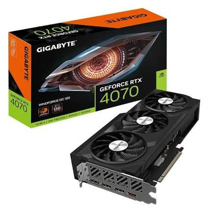

NVIDIA GeForce RTX 4070 — это высокопроизводительная видеокарта, основанная на архитектуре Ada LovelaceНовейшая архитектура NVIDIA, обеспечивающая трассировку лучей и ИИ-ускорение, предназначенная для игровых ПК и рабочих станций. Устройство обеспечивает значительный прирост производительности в играх с трассировкой лучей и поддерживает технологию DLSS 3Deep Learning Super Sampling — технология ИИ-масштабирования, которая увеличивает FPS в 2–3 раза без потери качества с генерацией кадров. Карта оснащена 12 ГБ видеопамяти GDDR6X и эффективной системой охлаждения, что делает её отличным выбором для разрешения 1440p и 4K.

Характеристики устройства
- GPU AD104 (Ada Lovelace)
- Видеопамять 12 ГБ GDDR6X
- Шина памяти 192 бит
- Частота ядра до 2475 МГц
- Интерфейс PCIe 4.0 x16
- Питание 200 Вт (TGP)
Дополнительная информация
Нажмите, чтобы показать скрытую информацию
Видеокарта поддерживает трассировку лучей в реальном времени, технологию NVIDIA Reflex для снижения задержки ввода, а также NVENC для аппаратного кодирования видео. Рекомендуемая мощность блока питания — не менее 650 Вт. Для подключения требуется один 8-контактный разъём питания (или 12VHPWR через переходник).